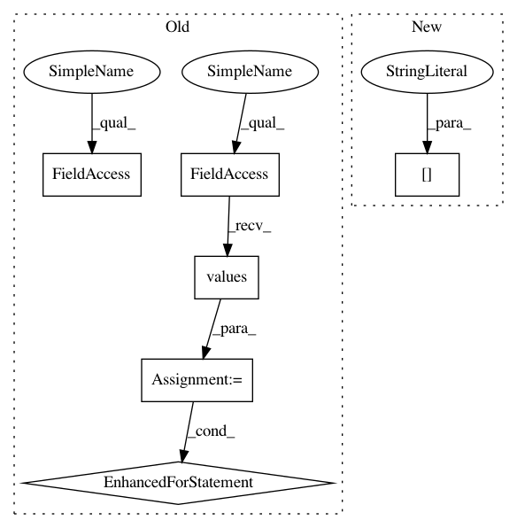

5183c63240845db0fefcd6cae69370ccc71f6f6c,src/graph_builder/frontend/optimize_rules/affine_concat.py,AffineConcat,__call__,#AffineConcat#Any#,14
Before Change
found_seq = None
print("affineconcat")
print("outputs:" + str(graph.outputs))
for output in graph.outputs.values():
opr = output.output_from
oprs = []
if isinstance(opr, O.Compose):
composed = opr // type: O.Compose
oprs = list(opr.outputs_alias)
else:
oprs = [opr]
print("oprs: " + str(oprs))
for opr in oprs:
found_seq = self._search(opr, touched_operators, [])
if found_seq is not None:
break
if found_seq is not None:
break
print("AffineConcat: found " + str(found_seq))
return graph, flag_changed
After Change
if isinstance(op, Convolution2D):
self._start_found(op, current_seq)
elif (isinstance(op, AxiswiseScale) or isinstance(op, AxiswiseBias)) and \
op.parameters["axis"] is Axis.C:
self._cont_found(op, current_seq)
else:
flag_changed_in_iter = self._non_cont_found(op, current_seq)
In pattern: SUPERPATTERN
Frequency: 3
Non-data size: 6
Instances
Project Name: mil-tokyo/webdnn
Commit Name: 5183c63240845db0fefcd6cae69370ccc71f6f6c
Time: 2017-04-22
Author: hidaka@mi.t.u-tokyo.ac.jp
File Name: src/graph_builder/frontend/optimize_rules/affine_concat.py
Class Name: AffineConcat
Method Name: __call__
Project Name: mil-tokyo/webdnn
Commit Name: 5183c63240845db0fefcd6cae69370ccc71f6f6c
Time: 2017-04-22
Author: hidaka@mi.t.u-tokyo.ac.jp
File Name: src/graph_builder/frontend/optimize_rules/affine_concat.py
Class Name: AffineConcat
Method Name: __call__
Project Name: elbayadm/attn2d
Commit Name: 86793391e38bf88c119699bfb1993cb0a7a33968
Time: 2020-01-11
Author: myleott@fb.com
File Name: fairseq/trainer.py
Class Name: Trainer
Method Name: load_checkpoint